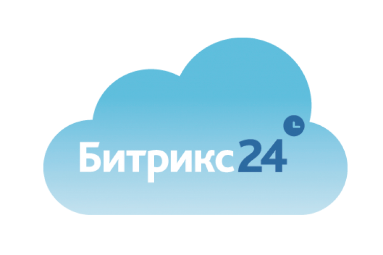
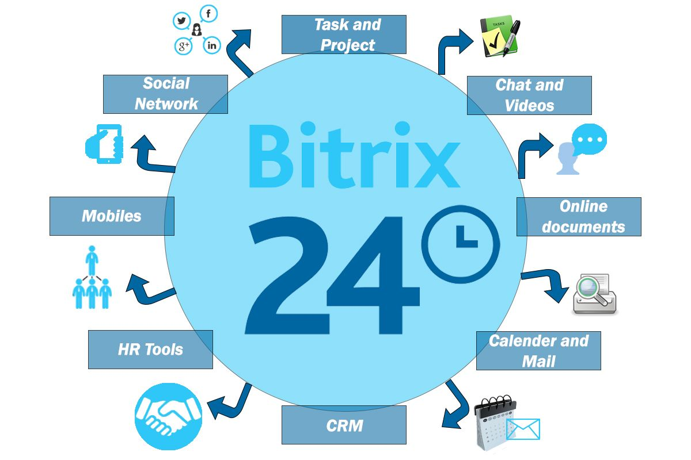

Сервис «Битрикс24» ориентирован на компании малого и среднего бизнеса и позволяет за несколько минут создать свой «Битрикс24», пригласить в него коллег и начать работать в «облаке».
С «Битрикс24» можно начать работать бесплатно, подключив тарифный план «Проект» на 12 человек для работы отдела или небольшой компании. В коммерческих тарифных планах число сотрудников не ограничено.
Формирование такой ценовой политики и предложение бесплатного тарифа стало возможным благодаря оптимальному использованию ресурсов в облачной инфраструктуре Amazon. Сервис «Битрикс24» размещен в нескольких дата-центрах в «облаке» Amazon, которые обеспечивают полное резервирование и независимую работу, что позволяет гарантировать бесперебойную работу сервиса 24/7. Для обеспечения отказоустойчивости и готовности к любым нагрузкам активно используются балансировщики трафика, автомасштабирование, облачное хранилище S3 и другие сервисы Amazon (AWS, Amazon Web Services).
Для обеспечения безопасности в сервисе реализовано 10 уровней защиты. Данные клиентов из разных компаний разделены на уровне баз данных и облачного хранилища и полностью изолированы для исключения даже ошибочного доступа к чужим данным. Ежедневно выполняется резервное копирование.
Все соединения с «Битрикс24» производятся с использованием сертификата SSL, что обеспечивает безопасность корпоративной информации и защиту паролей. Сервис обеспечивает максимальную защиту от самых разнообразных угроз безопасности. Проактивный фильтр (WAF Web Application Firewall) защищает от большинства известных атак на веб-приложения.
«Битрикс24» это первый российский облачный сервис, относящийся к классу ПО Social Business Software (SBS). С 2010 года этот класс корпоративного ПО фигурирует в отчетах западной некоммерческой организации AIIM, которая объединяет экспертов в области электронного документооборота и управления контентом. В России этот класс ПО пока не является широко распространенным, но компании проявляют все больше интереса к подобным решениям.
«Битрикс24» не копирует западные сервисы, а является продуктом, в котором реализован почти пятилетний опыт компании «1С-Битрикс» в разработке систем управления корпоративными порталами. C 2008 года компания разрабатывает коробочный продукт «1С-Битрикс: Корпоративный портал»
Сервис включает следующие функциональные возможности:
«Живая лента» единая лента событий в «Битрикс24», в которой отображаются все изменения в рабочих группах, документах, статусах задач и других элементах. Этот инструмент позволяет оперативно информировать сотрудников о происходящем в компании, оперативно реагировать на поставленные задачи, подключаться к обсуждениям, работать с новыми документами.
Сообщения удобная форма обмена информацией между сотрудниками. Позволяет написать сообщение в один клик, прямо из «Живой ленты». В сообщениях предусмотрена адресация лично сотруднику, сразу нескольким сотрудникам, отделу компании или рабочей группе. К сообщению можно прикрепить документ, фотографию или видео и обсудить с коллегами. Этот функционал является альтернативой внутрикорпоративной переписке по электронной почте, которая зачастую не удобна для коммуникаций и сильно загружает почтовые сервера.
«Живая лента» интерактивна предусмотрена возможность комментировать сообщения, а также отмечать их кнопкой «Мне нравится» («лайкать»). Этот популярный функционал из социальных сетей показывает мнение сотрудников, влияет на рейтинг записи, файла и, соответственно, на его позицию в выдаче при поиске по контенту «Битрикс24».
В «Битрикс24» реализован простой и понятный механизм работы с документами, доступный каждому пользователю. Предусмотрены возможности загрузить файл или прикрепить его к сообщению в «Живой ленте» с использованием технологии Drag&Drop, поиск документа с учетом рейтинга отметок «Мне нравится». Уведомления о новых документах автоматически отображаются в «Живой ленте». Сотрудники могут комментировать документ или отметить кнопкой «Мне нравится».
В сервис включен функционал CRM (Customer Relationship Management), который позволяет вести базу контактов клиентов, партнеров, поставщиков, и фиксировать все события (например, звонки, письма, встречи), связанные с этой компанией, планировать деятельность по продажам, строить «воронку продаж». Обработку лидов можно автоматизировать в соответствии с нужным бизнес-процессом.
«Битрикс24» содержит мощный функционал управления задачами, который также построен с использованием социальных коммуникаций. Поставленная задача отображается в живой ленте, согласно настроенным правам доступа, постановку задачи или ход ее выполнения можно комментировать, обсуждать, дополнять необходимыми документами. В задачах есть возможность назначать такие роли, как постановщик (например, сотрудник может самостоятельно поставить себе задачу, указав в качестве постановщика своего руководителя), наблюдатель, соисполнители
График работы над задачами можно представить в виде диаграммы Ганта классической ленточной диаграммы, которая наглядно отображает временные рамки задач по отдельному проекту. Каждую выполненную задачу может оценить руководитель положительной или отрицательной отметкой, на основе которых составляется отчет об эффективности. Подобный механизм позволяет определить, насколько результативно работает сотрудник, отдел и вся компания в целом. Предусмотрена возможность экспорта отчетов в Excel.
В «Битрикс24» есть возможность формировать рабочие группы, приглашая туда коллег для работы над отдельными проектами. Для каждой рабочей группы предусмотрены: публикация статусов, документов, постановка задач, комментарии и обсуждения, формирование отчетов, работа с календарями.
Для облегчения работы с контентом, в «Битрикс24» разработан «умный поиск», индексирующий все документы, записи, задачи, блоги, сообщения и другую информацию. Индексация происходит при публикации новых материалов, с учетом «социальной» составляющей при формировании поисковой выдачи выше оказываются те материалы, которые получили больше отметок «Мне нравится» от пользователей.
Сервис включает систему учета рабочего времени сотрудников. В специальном выпадающем меню, при начале работы с сервисом с утра сотруднику предлагается отметить начало рабочего дня, а вечером его окончание, также можно отмечать перерывы, отсутствия, быстро планировать встречи в календарях и задачи на день. На основе этих данных формируется отчет по рабочему времени каждого сотрудника. Кроме этого, можно учитывать затраты времени на выполнение задач.
Веб-мессенджер в «Битрикс24» позволяет эффективно обмениваться сообщениями и файлами через веб-интерфейс. История переписки сохраняется, нужное сообщение легко найти с помощью встроенного поиска. Индикатор присутствия покажет, кто из коллег находится в онлайне.
«Битрикс24» позволяет автоматизировать сбор отчетов сотрудников о проделанной работе. В отчет включаются все отчеты сотрудника за день, выполненные задачи за этот период, планы. Существует возможность оценки отчета руководителем. На графике отчетов выводятся все отчеты сотрудников с оценками руководителя, что позволяет быстро оценить эффективность работы каждого сотрудника, отдела и всей компании.
В «Битрикс24» есть простой инструмент, позволяющий многократно повысить эффективность проведения внутренних встреч «Собрания и планерки». Он включает в себя возможность приглашения участников встречи, автоматической рассылки повестки, постановку времени собрания в личные календари, рассылку результатов обсуждения, постановку задач по итогам совещания. Вся информация сохраняется в истории, обеспечивая «прозрачность» в рабочих коммуникациях
В «Битрикс24» структура компании наглядно представлена как иерархия подразделений и отделов компании. Можно визуально проектировать структуру компании достаточно «перетащить» мышкой сотрудника из одного отдела в другой, поменять руководителей отделов, добавить новых сотрудников. Подчинение в структуре влияет практически на все: кто кому отправляет отчеты, кому можно делегировать задачу и т.д.
Работу с сервисом «Битрикс24» можно строить в рамках одного из трех тарифных планов. «Младший» тарифный план «Проект» полностью бесплатный. В рамках него могут зарегистрироваться и работать до 12 сотрудников. Общее место в «облаке», которое можно использовать, 5 Гб. Два «старших» тарифа «Команда» и «Компания» являются коммерческими и не ограничены по числу сотрудников. Доступное место на диске для «Команды» 50 Гб. Для «Компании» 100 Гб. «Команда» и «Компания» отличаются и по функциональным возможностям. В «Компании» дополнительно доступны рабочие отчеты, учет рабочего времени, собрания и планерки.